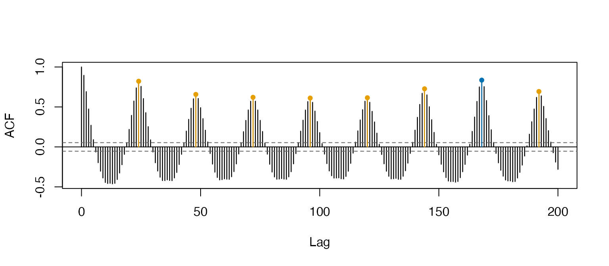
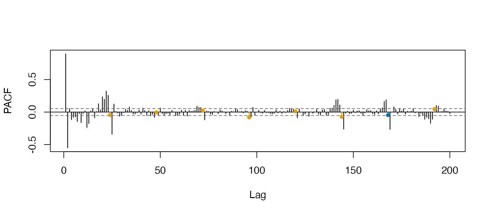
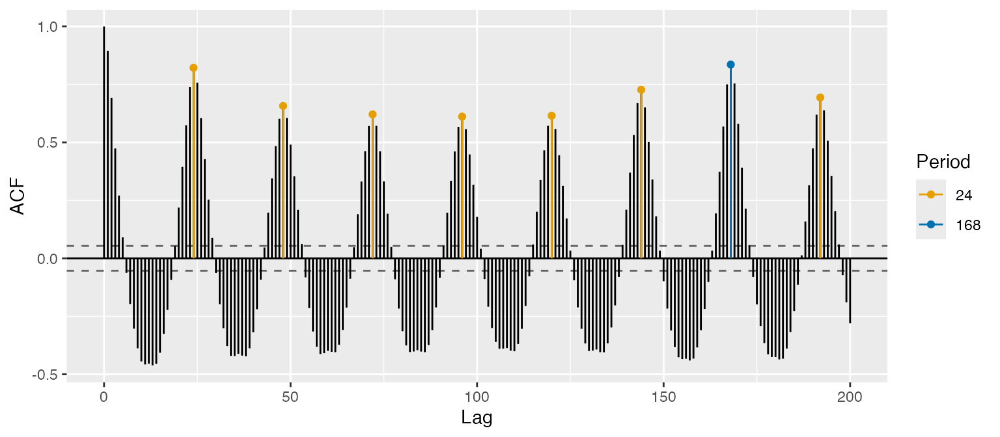
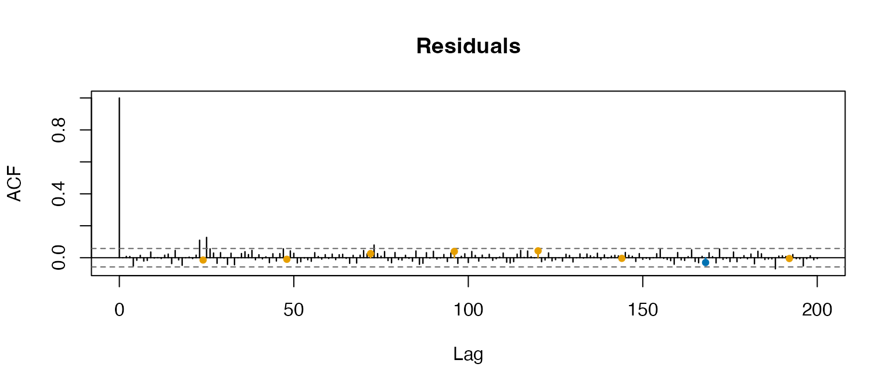

Hourly, daily or half-hourly data usually show more than one seasonal
cycle at the same time: the number of cars on a motorway repeats itself
every 24 hours and every 168 hours (a week).
stats::arima() can accommodate only one of the two. The
msarima package fits the multiple seasonal model of Lisi
and Grigoletto (2025),
\[ \phi(B)\,\prod_{j=1}^{k}\Phi_j\!\left(B^{S_j}\right)\, (1-B)^{d}\prod_{j=1}^{k}\left(1-B^{S_j}\right)^{D_j} y_t = \mu + \theta(B)\,\prod_{j=1}^{k}\Theta_j\!\left(B^{S_j}\right) e_t , \]
where \(e_t\) is white noise with variance \(\sigma^2\) and \(\mu\) is a constant, with one autoregressive, differencing and moving average operator for each seasonal period \(S_1, \dots, S_k\).
The data
MAD_m40 is the hourly number of vehicles recorded by a
sensor on the M-40 ring road of Madrid over the eight weeks from 3
February to 29 March 2024. It is an msts object with
seasonal periods 24 and 168 (1344 observations in all), so those periods
do not have to be repeated in every call.
head(MAD_m40, 12)
#> Multi-Seasonal Time Series:
#> Start: 1 1
#> Seasonal Periods: 24 168
#> Data:
#> [1] 485 406 411 320 284 245 239 222 265 409 706 845
plot(window(MAD_m40, end = 4), ylab = "vehicles per hour",
main = "M-40, first four weeks (time in weeks)")Both cycles are visible: the daily peak-hour pattern, and the weekly one with the weekends clearly lower.
Looking at the cycles
sacf() and spacf() are the correlograms of
the package. They work like stats::acf(), but the lags
belonging to each seasonal period are coloured, so the cycles can be
read off the plot instead of counted by hand. The periods are taken from
the msts object.
sacf(MAD_m40, lag.max = 200)
spacf(MAD_m40, lag.max = 200)
Orange marks the multiples of 24, blue the multiples of 168;
col changes them. The autocorrelation decays very slowly at
both, which suggests one difference at each period.
There is a ggplot2 version of both,
ggsacf() and ggspacf():
ggsacf(MAD_m40, lag.max = 200)
Fitting the model
The non-seasonal part goes in order, and each seasonal
component is one element of the seasonal list, in the same
order as the periods:
fit <- msarima(MAD_m40,
order = c(1, 0, 2),
seasonal = list(c(0, 1, 1), c(0, 1, 1)))
fit
#> Series: MAD_m40
#> mSARIMA(1,0,2)(0,1,1)[24](0,1,1)[168]
#>
#> Coefficients:
#> AR(1) MA(1) MA(2) SMA(1,1) SMA(2,1)
#> 0.8847 -0.3737 -0.0906 -0.5603 -0.6836
#>
#> sigma^2 = 4009.7288 log likelihood = -5356.48
#> AIC = 10724.97 AICc = 10725.04 BIC = 10755.26summary() adds standard errors, obtained from the
numerical Hessian of the log-likelihood, and the associated tests:
summary(fit)
#> Series: MAD_m40
#> mSARIMA(1,0,2)(0,1,1)[24](0,1,1)[168]
#>
#> Coefficients:
#> Estimate Std. Error z value Pr(>|z|)
#> AR(1) 0.88473 0.02473 35.770 <2e-16 ***
#> MA(1) -0.37373 0.04060 -9.204 <2e-16 ***
#> MA(2) -0.09059 0.03805 -2.381 0.0173 *
#> SMA(1,1) -0.56029 0.02700 -20.748 <2e-16 ***
#> SMA(2,1) -0.68362 0.02525 -27.072 <2e-16 ***
#> ---
#> Signif. codes: 0 '***' 0.001 '**' 0.01 '*' 0.05 '.' 0.1 ' ' 1
#>
#> sigma^2 = 4009.7288 log likelihood = -5356.4828
#> AIC = 10724.9656 AICc = 10725.0390 BIC = 10755.2612coef(), fitted(), residuals(),
logLik(), AIC() and BIC() are all
available and behave as usual. When the model contains differencing the
series is differenced before estimation, so the first \(d + \sum_k D_k S_k\) residuals are
NA:
c(nobs = fit$nobs, n.used = fit$n.used, leading_NA = sum(is.na(residuals(fit))))
#> nobs n.used leading_NA
#> 1344 1152 192Parameters can be held fixed by supplying fixed with one
entry per parameter and NA where the parameter is to be
estimated. The order is AR, seasonal AR, MA, seasonal MA, sigma:
Checking the residuals
Passing the fitted model to sacf() uses the residuals
and the seasonal periods of the model, so no argument is needed. What is
left at the seasonal lags is what the model has failed to capture:
sacf(fit, lag.max = 200, main = "Residuals")
msportmanteau() turns this visual check into a formal
test, using the multi-seasonal portmanteau statistics of Grigoletto and
Lisi (2026). With the first 8 lags and 5 multiples of each period, 18
lags are tested, leaving 13 degrees of freedom after the 5 estimated
coefficients. Neither the Ljung-Box nor the Monti version rejects the
absence of residual autocorrelation:
msportmanteau(fit, nlag = 5, lags_short = 8)
#>
#> Multi-seasonal Ljung-Box test
#>
#> data: MAD_m40
#> X-squared = 16.19, df = 13, p-value = 0.239
msportmanteau(fit, type = "Monti", nlag = 5, lags_short = 8)
#>
#> Multi-seasonal Monti test
#>
#> data: MAD_m40
#> X-squared = 11.769, df = 13, p-value = 0.5467Forecasting
forecast() returns an object of the usual class of the
forecast package, so it prints and plots like any
other. Prediction intervals come from the \(\mathrm{MA}(\infty)\) representation of the
model, under normal innovations:
Simulating
msarima.sim() generates a series from a model
specification, without any data:
set.seed(1)
y <- msarima.sim(nsim = 500,
order = c(1, 0, 1),
seasonal = list(c(0, 0, 1), c(0, 0, 1)),
seasonal.period = c(7, 30),
ar = 0.6, ma = c(0.4, 0.3, 0.2),
sigma2 = 0.5)and simulate() does the same from a fitted model,
reusing its specification and its estimates:
y_sim <- simulate(fit, nsim = 168, seed = 1)References
Lisi, F. and Grigoletto, M. (2025). Multiple seasonal autoregressive integrated moving average models. Journal of Forecasting, 44(6), 2037–2052. https://doi.org/10.1002/for.3283
Grigoletto, M. and Lisi, F. (2026). Portmanteau goodness-of-fit tests in the presence of simple, mixed, and multiple seasonal autocorrelation. arXiv. https://doi.org/10.48550/arXiv.2609.32381